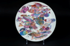

|  | 作品名稱 | 一隻白色小魚迷失在巴洛克的群聚裏 A small white fish lost in Baroque fauna |
| 作者 | 林俊佑Vanzoï Lin | |
| 年代 | 2016 | |
| 尺寸 | 22.8×2.3 | |
| 作品說明 | 這件作品以色彩鮮艷的筆調繽紛地彩繪出，疊合交織出深海底棲性飛角魚科豹魴鮄屬(Dactyloptena)與其他魚種，企圖用最巴洛克式華麗的構圖與設色，表現每一種魚類的外在姿態，無論是如蝶翼的胸鰭或斑斕絢爛的身軀。當然每一隻魚也都有牠自己的特色與個性，但盤面一個從未被注目的注目的角落，只有一隻白色的小魚找不到自己的方向與歸屬感，雖然如此，牠仍然是個非常精緻並且小而美的存在，遺世而獨立，卻未感到孤單。 |